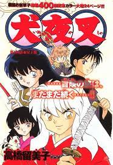

Rumiko Takahashi
Es una mangaka japonesa, Artista prolífica y con obras de diversas temáticas, Rumiko Takahashi ha sido y es una de las artistas del manga más notables, con obras como Urusei Yatsura, Maison Ikkoku, Ranma ½ e InuYasha entre otras muchas, por su gran trayectoria y éxito se ha ganado el título de 'La Reina del manga

Inuyasha (1996)
Se basa en la historia de una joven llamada Kagome que al cumplir 15 años viaja a través del tiempo por medio de un pozo magico (que se encuentra en un templo que esta en su casa) hasta regresar a la epoca de las guerras civiles es alla donde encuentra al personaje principal (Inuyasha).